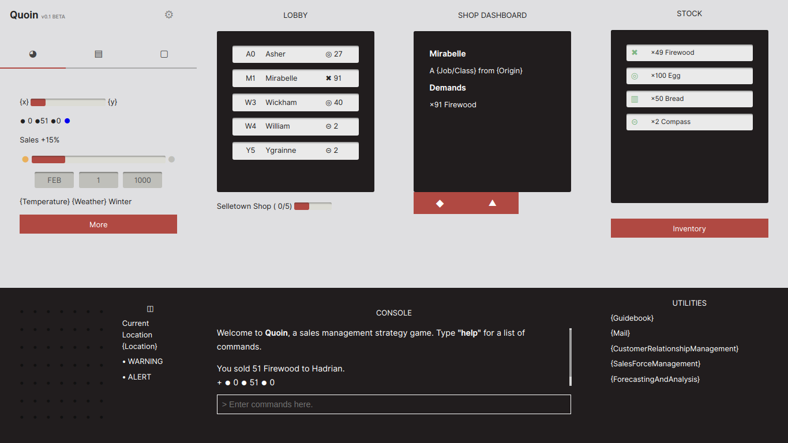

Quoin was an unfinished sales management game where you played as an aspiring shopkeeper in the town of Selletown.
I was taking a boring course called Sales and Selling so to motivate myself to study, I turned it into a game by implementing concepts being taught in class. The project was eventually pushed to the backburner once coursework started piling up and ended up getting left in the archives.
| 15 Aug 2017–15 Aug 2017 | 1 logs | 0.78 h |
| Development | 0.78 h |